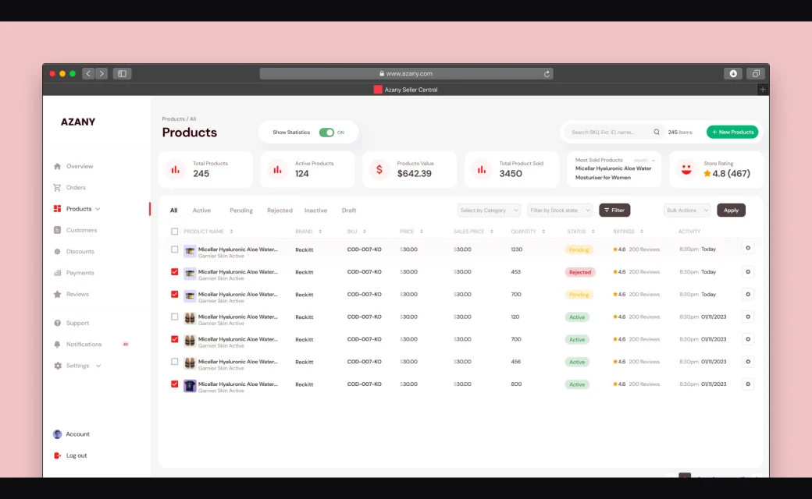
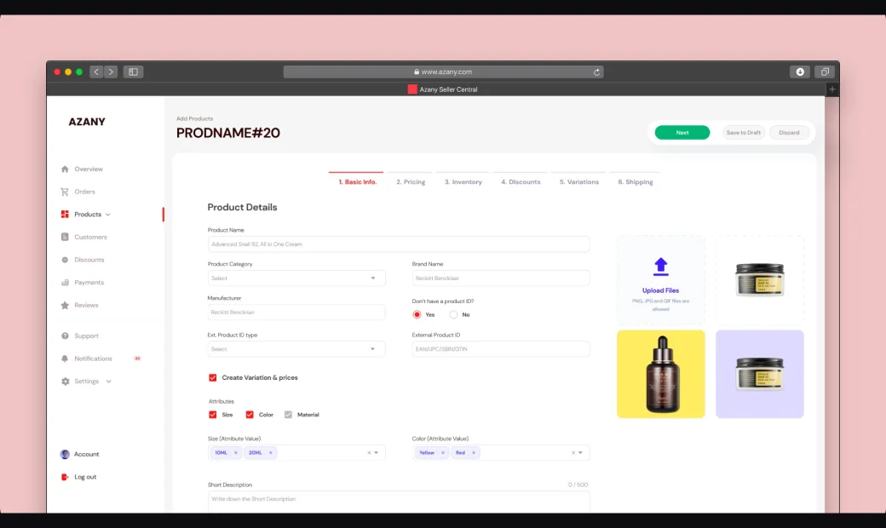
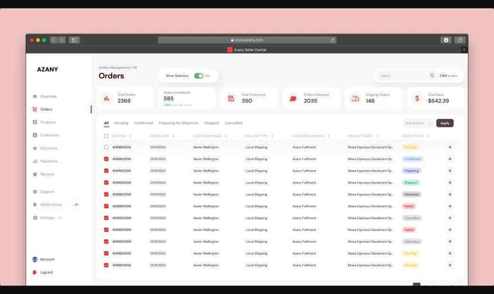

Azany Seller Central
Azany is an innovative global e-commerce platform that enables users to shop for country-specific products from around the world, breaking down geographical barriers in online shopping. The Azany Seller platform provides vendors with a centralized, user-friendly interface to manage their products, track sales, handle orders and streamlining the selling process on the platform.
The case study highlights how strong design leadership, a thorough UX audit, and close collaboration transformed Azany’s outdated platform into a user-friendly, scalable global marketplace

Background & Challenges
Azany, an innovative global e-commerce platform, faced significant UX challenges that hindered its potential to break geographical barriers in online shopping. The existing online store and seller dashboard suffered from poor user experience, uninspired marketing strategies on the homepage, and a stale, redundant design system that failed to support the platform’s ambitions. Midway through development, Azany needed a fresh vision to audit the product comprehensively, improve usability, and create a cohesive design that aligned with their global marketplace goals.
Key challenges included:
- A disjointed and uninspiring UX that confused users and sellers alike
- Ineffective marketing and homepage presentation limiting user engagement
- An outdated design system that was unscalable and difficult for developers to implement
- Incomplete and dull seller dashboard prototypes lacking practical usability and vision
- A tight timeline requiring rapid auditing, redesign, and delivery of working solutions
Process
Hired as the lead product designer mid-project, I took charge of auditing the entire platform, identifying critical UX pain points and areas for design improvements. Collaborating closely with the UI/UX team and developers, I steered a rapid but thorough redesign effort with the following key approaches:
- Comprehensive UX audit: Analyzed existing flows and user feedback to pinpoint usability bottlenecks across both the marketplace and seller dashboard
- Collaborative design workshops: Partnered with UX designers and developers to ideate practical solutions balancing usability, business goals, and technical feasibility
- Design system overhaul: Updated and expanded the design system to support scalable, reusable components tailored for Azany’s unique marketplace and seller needs
- Seller dashboard rebuild: Designed a fully functional and visually engaging seller central dashboard featuring customizable stats homepage, product management, order handling, customer management, and settings—all focused on ease of use and practical workflows
- Iterative prototyping and testing: Delivered working prototypes for fast feedback cycles and seamless handoff to development within a compressed timeline


Outcome
- Enhanced user experience: The marketplace’s homepage and shopping flows were revitalized, increasing engagement and cross-country sales opportunities.
- Empowered sellers: The new seller dashboard gave vendors intuitive tools to manage their storefronts efficiently, improving satisfaction and retention.
- Robust design system: The refreshed design system accelerated development and ensured visual and functional consistency across the platform.
- Timely delivery: Despite joining mid-project, the audit, redesign, and prototype handoff were completed swiftly, enabling the team to meet launch goals without compromising quality.